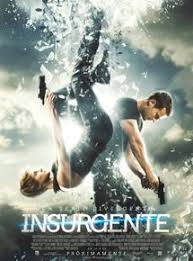

Insurgente

Insurgent, es la segunda novela de la autora del New York Times Veronica Roth y secuela de Divergent y publicada el 1 de mayo 2012, es el segundo libro de la Trilogía Divergente, 1 y en esta novela nos regala otra trepidante historia repleta de giros inesperados, desengaños, amor y profundas reflexiones sobre la naturaleza humana.